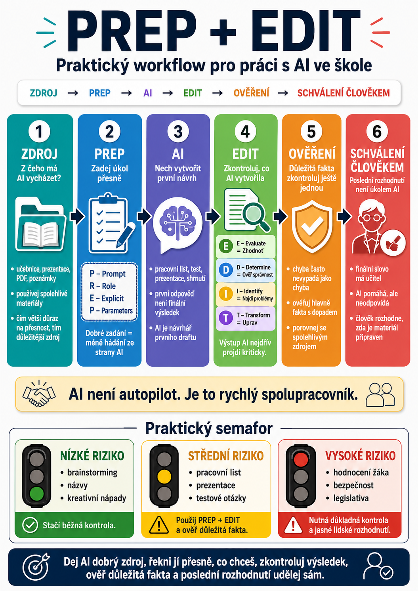

Používání umělé inteligence ve škole nemusí být složité. Problém většinou nevzniká v tom, že by učitel nebo žák neuměl otevřít ChatGPT, Gemini nebo Copilot.
Mnohem důležitější je vědět:
- z čeho má AI vycházet,
- jak jí úkol správně zadat,
- jak zkontrolovat výsledek,
- co je potřeba ověřit,
- a kdo za konečný výstup odpovídá.
Právě proto je užitečné spojit dvě jednoduché metody:
PREP – pomáhá připravit kvalitní zadání.
EDIT – pomáhá zkontrolovat výsledek.
Pro současnou školní praxi je ale vhodné celý postup ještě rozšířit.
Tento postup lze použít při tvorbě pracovních listů, testů, prezentací, výkladových materiálů, kvízů, projektových zadání i dalších školních výstupů.

1. ZDROJ
Z čeho má AI vycházet?
Tohle je krok, který se při práci s AI často přeskočí.
Učitel napíše například:
Vytvoř pracovní list o Evropské unii.
AI nějaký pracovní list vytvoří.
Jenže odkud informace vzala?
Odpovídají tomu, co se žáci skutečně učili?
Používají stejné pojmy jako učebnice?
Nejsou některé informace zastaralé?
Proto je vhodné začít právě u zdroje.
Může to být například:
- učebnice,
- prezentace učitele,
- vlastní poznámky,
- odborný článek,
- školní materiál,
- pracovní list,
- tematický plán,
- oficiální web,
- PDF dokument,
- konkrétní kapitola knihy.
Místo obecného zadání tedy můžeme říct:
Vycházej pouze z přiloženého textu.
Nebo:
Použij jako hlavní zdroj tento dokument a nepřidávej informace, které v něm nejsou.
To výrazně snižuje riziko, že AI vytvoří materiál, který sice působí dobře, ale neodpovídá tomu, co ve výuce potřebujeme.
Kdy zdroj nepotřebujeme?
Ne vždy.
Pokud například chceme:
- deset nápadů na zahřívací aktivitu,
- názvy projektů,
- kreativní otázky do diskuse,
- varianty formulace instrukce,
- návrhy témat,
může AI pracovat i bez konkrétního zdroje.
Pokud ale vytváříme:
- výklad,
- test,
- studijní materiál,
- odborný obsah,
- právní nebo legislativní přehled,
- historický text,
je práce se zdroji mnohem důležitější.
Čím více záleží na přesnosti, tím důležitější je zdroj.
2. PREP
Zadej úkol přesně
Jakmile víme, z čeho má AI vycházet, přichází samotné zadání.
Pomoci nám může framework PREP:
Co má AI udělat?
R – Role
V jaké roli má pracovat?
E – Explicit
Co přesně má výstup obsahovat?
P – Parameters
Jaká omezení má dodržet?
Například:
Role: Jsi zkušený učitel elektrotechniky na střední odborné škole.
Explicit: Žáci mají procvičit základní pojmy, rozpoznání součástek a jednoduché schéma zapojení.
Parameters: Pracovní list je určen pro první ročník, má být na 20 minut, obsahovat maximálně 12 úkolů a na konci řešení pro učitele.
Díky PREP nemusí AI tolik hádat.
3. AI
Nech vytvořit první návrh
Teprve teď přichází samotné generování.
AI vytvoří:
- návrh pracovního listu,
- text,
- otázky,
- aktivitu,
- tabulku,
- shrnutí,
- scénář hodiny,
- nebo jiný výstup.
A právě tady je důležité jedno pravidlo:
První odpověď AI není automaticky finální výsledek.
Je to první návrh.
Stejně jako když kolega pošle první verzi materiálu, také ji většinou ještě otevřeme, přečteme a upravíme.
U AI by to mělo být stejné.
4. EDIT
Zkontroluj, co AI vytvořila
Teď použijeme druhý framework:
Zhodnoť výstup.
D – Determine
Ověř správnost.
I – Identify
Najdi problémy, zkreslení a chybějící informace.
T – Transform
Výsledek uprav.
E – Evaluate
Ptejme se:
- splnila AI zadání?
- odpovídá výstup úrovni žáků?
- je materiál srozumitelný?
- odpovídá vzdělávacímu cíli?
- není příliš dlouhý?
- není naopak příliš jednoduchý?
D – Determine
Zkontrolujeme fakta.
Například:
- definice,
- data,
- odborné pojmy,
- výpočty,
- správné odpovědi,
- citace,
- zákony,
- historické údaje.
I – Identify
Hledáme problémy.
Například:
- nejednoznačné otázky,
- stereotypy,
- příliš složitý jazyk,
- chybějící perspektivu,
- opakující se úlohy,
- nechtěnou nápovědu,
- nevhodný příklad.
T – Transform
Nakonec materiál upravíme.
Můžeme například:
- některé otázky odstranit,
- změnit obtížnost,
- doplnit vlastní příklad,
- opravit chybnou informaci,
- zkrátit instrukce,
- změnit pořadí aktivit,
- přidat obrázek nebo tabulku.
5. OVĚŘENÍ
Důležitá tvrzení zkontroluj ještě jednou
EDIT už obsahuje kontrolu správnosti.
Pro školní praxi je ale užitečné dát ověření ještě jako samostatný krok.
Proč?
Protože jinak máme tendenci zkontrolovat hlavně to, co na první pohled vypadá divně.
Největší problém AI ale často spočívá v tom, že chyba nevypadá jako chyba.
Text může být:
- hezky napsaný,
- logický,
- přesvědčivý,
- odborně formulovaný,
a přesto může obsahovat nepřesnost.
Teď se zastav a podívej se na fakta ještě jednou.
Co ověřovat důkladněji?
Zvláštní pozornost si zaslouží například:
- legislativa,
- zdravotní informace,
- bezpečnost,
- odborné technické postupy,
- historická fakta,
- statistiky,
- citace,
- aktuální politické informace,
- hodnocení žáků,
- doporučení týkající se konkrétního žáka.
Čím větší dopad může chyba mít, tím důkladnější má být ověření.
6. SCHVÁLENÍ ČLOVĚKEM
Poslední rozhodnutí není úkolem AI
Poslední krok je možná nejdůležitější.
Někdo musí říct:
Ano, tento materiál můžu použít.
Ve škole by to měl být člověk.
AI může pomáhat:
- tvořit,
- analyzovat,
- navrhovat,
- shrnovat,
- porovnávat,
- doporučovat.
Ale finální rozhodnutí zůstává na učiteli.
Učitel zná:
- svoje žáky,
- jejich úroveň,
- konkrétní třídu,
- předchozí učivo,
- atmosféru ve třídě,
- vzdělávací cíle,
- školní pravidla,
- kontext, který AI často nezná.
Proto je posledním krokem:
ČLOVĚK SCHVÁLÍ VÝSLEDEK.
Celý workflow v kostce
1. ZDROJ
Z čeho má AI vycházet?
2. PREP
Co přesně chci vytvořit?
3. AI
Nechám vytvořit první návrh.
4. EDIT
Výsledek zhodnotím, zkontroluji a upravím.
5. OVĚŘENÍ
Důležitá fakta porovnám se spolehlivými zdroji.
6. SCHVÁLENÍ ČLOVĚKEM
Rozhodnu, zda je materiál skutečně připraven k použití.
Příklad: vytvoření pracovního listu
Představme si, že chceme vytvořit pracovní list do občanské nauky na téma dezinformace.
ZDROJ
Učitel nahraje vlastní výkladový text a odkaz na důvěryhodný zdroj.
PREP
Jsi učitel občanské nauky.
Vycházej z přiložených materiálů. Zaměř se na rozdíl mezi faktem, názorem, manipulací a dezinformací.
Pracovní list má být na 25 minut a obsahovat šest různých úloh.
AI
AI vytvoří první návrh.
EDIT
Učitel zjistí například:
- jedna otázka je příliš jednoduchá,
- dvě úlohy jsou téměř stejné,
- jeden příklad může být zavádějící.
Materiál upraví.
OVĚŘENÍ
Učitel zkontroluje definice a modelové příklady.
SCHVÁLENÍ
Teprve potom pracovní list použije se žáky.
Stejný postup může používat i žák
Workflow nemusí být určen pouze učitelům.
Lze jej zjednodušit i pro žáky.
Například:
Z čeho budeš vycházet?
2. Zadej úkol
Řekni AI přesně, co potřebuješ.
3. Nech si poradit
AI vytvoří návrh.
4. Zkontroluj
Není v odpovědi chyba?
5. Ověř
Najdi důvěryhodný zdroj.
6. Rozhodni sám
Použiješ výsledek, upravíš ho, nebo ho odmítneš?
To je mnohem hodnotnější dovednost než pouhé:
„Napiš mi referát.“
AI jako spolupracovník, ne autopilot
Celý workflow lze chápat velmi jednoduše.
AI není autopilot.
Je to spíš rychlý spolupracovník.
Dokáže vytvořit první verzi velmi rychle.
Ale stále potřebuje:
- správné zadání,
- kontext,
- kontrolu,
- zpětnou vazbu,
- lidské rozhodnutí.
A právě v tom je velký rozdíl mezi dvěma způsoby používání AI.
Pasivní používání
Kopírovat.
Vytisknout.
Aktivní používání
Tohle potřebuji.
Vytvoř návrh.
Tohle uprav.
Tuto informaci ověřím.
Tohle je vhodné.
Tohle použiju.
Druhý způsob je možná o několik minut delší.
Ale také výrazně bezpečnější a pedagogicky smysluplnější.
Ne každá úloha potřebuje celý proces
Ani tento workflow není potřeba používat mechanicky při každém dotazu.
Pokud AI požádáme:
Navrhni pět názvů třídního projektu.
není nutné zahajovat šestistupňovou kontrolní operaci.
Pokud ale připravujeme:
test, který bude ovlivňovat známku žáka
nebo:
odborný materiál, podle kterého se budou žáci učit
je kontrola mnohem důležitější.
Proto lze celý systém chápat jako škálu:
Čím vyšší je riziko chyby, tím více kontroly.
Praktický semafor
Pomoci může jednoduché rozdělení.
🟢 NÍZKÉ RIZIKO
Například:
- brainstorming,
- názvy,
- kreativní nápady,
- warm-up aktivity.
Stačí běžná kontrola.
🟡 STŘEDNÍ RIZIKO
Například:
- pracovní list,
- výkladový materiál,
- prezentace,
- testové otázky.
Použij PREP + EDIT a ověř důležitá fakta.
🔴 VYSOKÉ RIZIKO
Například:
- hodnocení konkrétního žáka,
- zdravotní informace,
- bezpečnostní postup,
- legislativa,
- rozhodnutí s významným dopadem.
Zde je nutná důkladná kontrola a jasné lidské rozhodnutí.
Největší změna není v promptu
Může se zdát, že moderní práce s AI je hlavně o tom, kdo umí napsat nejlepší prompt.
Ale ve škole je mnohem důležitější něco jiného.
Umět řídit celý proces.
Tedy:
- vybrat správný zdroj,
- jasně definovat úkol,
- použít AI jako pomocníka,
- kriticky zkontrolovat výsledek,
- ověřit důležitá tvrzení,
- převzít odpovědnost za finální rozhodnutí.
To je dovednost, která zůstane užitečná i tehdy, když se dnešní AI nástroje výrazně změní.
Celý postup v jedné větě
Pokud si nechceme pamatovat všechny názvy, stačí jednoduché pravidlo:
Co následuje?
Máme už tři důležité části:
PREP – jak připravit kvalitní zadání.
EDIT – jak kontrolovat výstupy AI.
PREP + EDIT workflow – jak celý proces bezpečně řídit.
V dalším článku se podíváme na praktičtější otázku:
8 otázek, které by si měl učitel položit při práci s AI
Krátký kontrolní seznam, který pomůže rozhodnout nejen jak AI použít, ale hlavně kdy její použití skutečně dává ve výuce smysl.